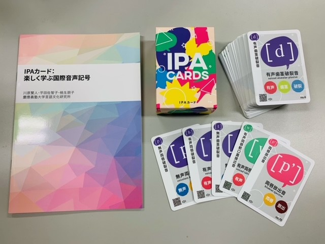

IPAカードについて

川原繁人・平田佐智子・桃生朋子（2020）IPAカード：楽しく学ぶ国際音声記号. 慶應義塾大学言語文化研究所.- 肺臓気流子音表・母音表
- IPAブックレット原稿（組版前）
- ブックレットの元になった論文。
- 以下で紹介する遊びは、様々な大学の学生（主に、東京大学・慶應義塾大学・国際基督教大学・首都大学東京の方々）の協力のもとで遊び方が確立されてきました。個々の名前は挙げませんが、ここに感謝いたします。
- いつか、大学対抗戦ができるくらいIPAカードが広まることを夢見ています。とくにカルタ。
遊ぶ前に
- どの種類のカードを使っても構いませんが、基本的に肺臓気流子音のカード（＝肌色のカード）を使うのがおすすめです。遊び的にも便利ですし、学問的にも肺臓気流子音の調音点や調音法と親しむことが重要だと思われます（私見です）。もちろん母音のカードで遊ぶことも可能です。
- どの遊びをするときも、カードに記されている音の名前（例えば「無声硬口蓋摩擦音」）を意識して読みましょう。そうすると自然に「硬口蓋」や「摩擦音」といった専門用語に自然と慣れてきます。
- トランプと一緒で、3−5人で遊ぶのが理想的です。
- 以下に紹介する遊びは、あくまで提案です。トランプで遊ぶのと同じようにローカルルールも積極的に考えてみましょう。
- 遊ぶ順番も自由ですが、神経衰弱から始めると用語に慣れて、他のゲームも楽しめるでしょう。
- かかる時間はあくまで目安です。参加人数によって異なります。授業で行う場合は目安として参考にしてください。
- カードについているQRコードを使うと実際の音が聞けます。遊んでいる間に気になった音があったら、積極的に利用しましょう。John Eslingが開発した無料のiOSアプリのiPAを使うと、IPA表から実際の発音を聞け、その調音も動画で観察できるので便利です。
- おすすめのゲームがありましたら、上のメールアドレスにご連絡ください。
調音法神経衰弱
- 肺臓気流子音のカードをよく切って、伏せて並べます。普通の神経衰弱と同じく、2枚めくり、同じ調音法だった場合、そのカードを入手できます。最後に一番多くのペアを取った人が勝ちです。
- めくったカードの名前（例えば、「有声両唇破裂音」）を読み、どの調音法（例えば、「破裂音」）をめくったかを声にだして確認しましょう。
- 大体15分くらいで終わります。
- 終わったら、どの調音法がどのようなものか確認しましょう。（または先生に教わりましょう。）
- 調音法の方が調音点よりも種類が少ないので、調音法から始めたほうがスムーズに遊びに入れます。
- IPAは神経衰弱用に作られているわけではありませんので、残りのカードが5枚でます。どんなカードが残るのか自分で確かめてみましょう。
- 調音法も調音点も一致しているミニマルペアは、3点として扱うローカルルールもありです。このルールを導入すると、調音点も意識することができます。
調音点神経衰弱
- 調音法で行った神経衰弱を調音点で行います。
- 調音点の方が種類が多いので20分ほどかかります。
- 終わったら、どの調音点が自分の口の中のどこに対応するか確認しましょう。（または先生に教わりましょう。）
カルタ
- 神経衰弱で、調音点と調音法に親しんだ人向けです。
- 肺臓気流子音のカードをすべて表にしてならべ、読み手が音を1つ読み上げます（例えば：「有声両唇破裂音」）。一番早くそのカードを取った人が、そのカードを入手でき、最後に何枚取れたかを競います。
- 間違ったカードを取ってしまった場合、お手つきとして一回休みます。
- 読み手は「有声両唇破裂音」と一気に読み上げるのではなく、「有声」と「両唇」、「両唇」と「破裂音」の間に少し間をおくと盛り上がります。間の置き方にも変化をつけましょう。
-
後半戦で場にあるカードが少なくなってきたら、読み手はすでに読んだカード（つまり、もう場にはないカード）を読んで、お手つきを誘発しても面白いです。
-
15分ほどで終わります。
-
先生と競っても面白いでしょう。（学生が読み手になります。）
- 上級者になったら、読み手は音の名前でなく音を実際に発音して（またはiPAを使って）、その音をもとにカルタを行っても良いでしょう。
七並べ
- IPAの表の配置を学ぶのに非常に有用です。
- まずよくシャッフルした肺臓気流子音のカードを参加者に配ります。初期状態では、すべての調音法が存在する調音点は「歯茎音」のみなので、手持ちの歯茎音の札を出し、IPA表の従って縦に並べます。「歯摩擦音」および「後部歯茎摩擦音」もまとめて置いてしまいましょう。
- 有声性のみで異なるミニマルペアは同じセルに置きます。
- あとは、普通の七並べと同じように、すでに場にでているカードに隣接するように順番にカードを置いていきます。並べられるカードがない場合、パスします。
- 声門閉鎖音は、隣接するカードがないので、あらかじめ除きます。ただし、ローカルルールとして、声門閉鎖音をどこにでもおけるジョーカーとして使っても面白いでしょう。
- ローカルルールとして、非肺臓気流音のカード（例えば緑のカード）を一枚入れて、ジョーカーとして使っても良いでしょう。ジョーカーはどこにでもおけます。
- IPA表を参照しないで並べられるようになるのが理想ですが、IPA表を参照しながらでも十分です。
- じつはハメ技が存在し、あるカードを取った人には必勝法があります。そのハメ技を探してみるのも面白いでしょう。ローカルルールとしてジョーカーを使用した場合、このハメ技は使えません。
- かかる時間は、参加者がIPA表にどれだけ慣れているかで大きく変わります。
- 有声性のみで異なるミニマルペアは同時における、というローカルルールがあっても良いでしょう。
ババ抜き
- 阻害音（破裂音、摩擦音、側面摩擦音）のみを使うので、7並べで遊んだ後に行うと楽です。
- 有声性のみ異なる2枚のカード（例えば、[p]と[b]) が揃ったら場に捨てられます。（共鳴音にはこのようなペアがないので、予め除いておくのです。）場に捨てるときは「両唇破裂音のペア」というように、調音点・調音法をしっかり確認しましょう。
- ババは、有声音が存在しない声門閉鎖音です。あとは普通のババ抜きです。
- 5分以内に終わるでしょう。
- ジジ抜きでもいいですが、ババ抜きのほうが盛り上がるようです。
ウノ
- ウノをIPAカードで行います。ただし、はじめに配る枚数は5枚で良いでしょう。肺臓気流子音のカードに加えて、吸着音のカードを「ドロー2」のカードとして使います。
- 場にでている一番上のカードと「調音点」か「調音法」どちらかが同じカードを捨てられます。捨てるカードがない場合、山から一枚引きます。引いたカードを捨てられる場合、捨てても構いません。
- 吸着音のカードを出した場合は、次の人は2枚引かなければなりません。ただし、場の一番上のカードと調音点が一致しているときにしか吸着音は出せません（硬口蓋歯茎吸着音や(後部)歯茎吸着音はどちらの調音点を使っても良いとします）。吸着音のあとに吸着音を出してドロー2を次の人に重ねがけできるかはローカルルールで決定してください。ただし、4枚引かされると、その人はほぼ勝てませんので、導入する場合はご慎重に。
- 手持ちの残りのカードが一枚になったら発音する音をあらかじめ決めて遊びましょう（「UNO」では雰囲気がでませんね。）。両唇入破音などがおすすめです。
- 場合によっては、まったく終わらない可能性があります。時間を決めて行いたい場合、山が一回なくなった時点で枚数が一番少ない人が勝ち、くらいでも良いでしょう。2分で勝負が終わる場合もありますし、10分たっても終わらない場合もあります。
くじら
- 全員に同じ枚数になるように全てのカードを配ります（あまりが出たら、わきに置いておきましょう）。配られたカードは伏せておき、自分でも見られません。
- 全員同時に一枚ずつ場に出します。もし自分のカードと同じ調音点か調音法を持つカードが場に出されたら、できるだけ自分のカードの記号を発音します。
- 上手く発音できたら、被ったカードを取れます。
- 被っていないカードは場に残し、次の回は、その上に出していきます。
- 被っても発音できる人がいなかった場合、全てのカードは場に残ります。また被ったカードがない場合もカードは場に残ります。
- 記号そのものを発音するのが難しい場合、初心者用ルールとして、被った調音点または調音法を指摘するという形でも良いかもしれません。その場合、自分のカードしかとれない、という減点を加えて良いでしょう。他の誰かが記号を発音できたら、そちらを優先させるのも良いでしょう。
インデァアンポーカー
- 戦略的なゲームです。
- 一人一枚山から選んで、自分の頭の前にカードを掲げます。自分のカードは見てはいけませんが、他の人のカードは見られます。カードは、山から自由に取り替えることができます。
- 目標は「自分のカードの調音点が、参加者の中で最も口の奥になること」です。相手にいろいろな質問をして、自分がどんなカードを持っているか推理し、奥の調音点を目指しましょう。駆け引きとして嘘をついても構いません。
- 駆け引きの時間はあらかじめ決めておくと良いでしょう。3分くらいが目安です。
坊主めくり（IPA上級者向け）
- IPAカードを裏にして、一つの山にします。
- 上から一枚引いて、めくったカードの音を発音します。発音できればそのカードをもらえます。発音できなければ、自分の持っているカードを全て場にだします。
- 次にめくったカードを発音できた人が場にあるカードを総取りできます。
- 発音できたかどうかを判定する人も必要ですし、上級者向けでしょう。
ポーカー（調整中）
- ポーカーを行います。考えられる役は今のところ以下のようになっています。どの役をどの程度の点数とするかなど、得意な人がいらっしゃいましたら、ぜひルール化してください。カードを変えられる回数はローカルルールで決定してください。くれぐれもお金はかけないようにしてください。また、どうしても調音点や調音法に注意が行きがちで、カード全体（記号そのもの）を見なくなる傾向にあります。教育的な観点からは、記号だけをみてポーカーができるようになるといいでしょう。
- ワンペア・ツーペア：調音点や調音法が同じペアを作ります。有声性は2種類しかないのでペアとして数えません。
- スリーカード：同じ調音点や調音法を持つカードを三枚集めます（例：[m,p,b]）。
- フルハウス：スリーカードとワンペアのセットです（例：[m,p,b + t,k]）。
- フォーカード：同じ調音点や調音法を持つカードを四枚集めます（例：[m,p,b,ɸ]）。
- フラッシュ：5枚のカードの調音点か調音法か有声性を揃えます。調音点が一番難しく、有声性が一番簡単でしょう（例：[p, b, t, d, k]）。
- ストレート：隣り合う調音点を5つ集めます。この際、歯音と後部歯茎音をスキップしても構いません（例：[p, v, t, ʈ, ɟ]）。
- ストレートフラッシュ：隣り合う調音点を5つ集め、かつ調音法（破裂音か鼻音）も揃えます。この際、歯音と後部歯茎音をスキップしても構いません。（例：[p,ɱ,t,ɽ,c]）。
- スーパーストレートフラッシュ：隣り合う調音点を5つ集め、かつ調音法・有声性も揃えます。（例：[t,ʈ,c,k,q]）。
- 摩擦音ストレートフラッシュ：歯音と後部歯茎音をスキップせずに摩擦音でストレートを作ります。必然的にフラッシュがつきます。（例：[f,θ,z,ʃ,ʂ]）。有声性も揃っていればスーパーになります。
- ロイヤルストレートフラッシュ：硬口蓋・軟口蓋・口蓋垂・咽頭・声門の摩擦音を揃えます。（例：[ʝ,x,ʁ,ħ,h]）
- スーパーロイヤルストレートフラッシュ：硬口蓋・軟口蓋・口蓋垂・咽頭・声門の摩擦音を有声性も含めてすべて揃えます。（例：[ç,x,χ,ħ,h]）